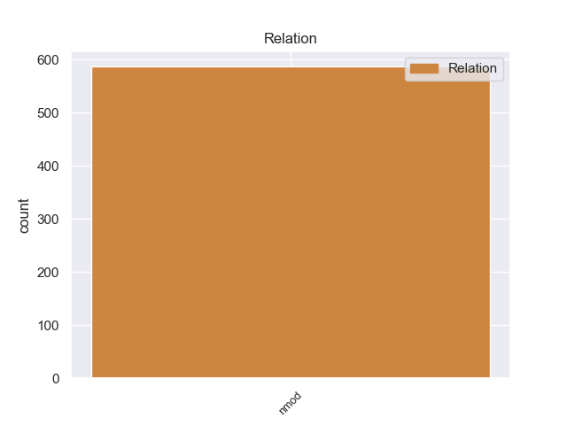
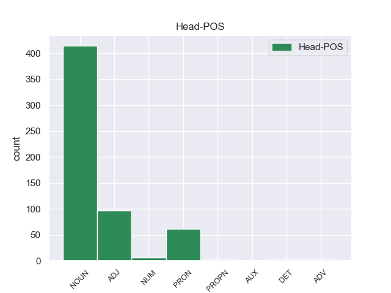

Distribution of features within this leaf



Agreement Rules sorted by frequency.
- When the dependent token is the nominal modifier(nmod) of the head token, and the head token is NOUN and the dependent token is PRON.
1 A _ _ _ _ 0 _ _ _
2 continuación _ _ _ _ 0 _ _ _
3 , _ _ _ _ 0 _ _ _
4 sonarán _ _ _ _ 0 _ _ _
5 los _ _ _ _ 0 _ _ _
6 ritmos _ _ _ _ 0 _ _ _
7 más _ _ _ _ 0 _ _ _
8 intensos _ _ _ _ 0 _ _ _
9 de _ _ _ _ 0 _ _ _
10 los _ _ _ _ 0 _ _ _
11 llanos _ _ _ _ 0 _ _ _
12 interpretados _ _ _ _ 0 _ _ _
13 por _ _ _ _ 0 _ _ _
14 una _ _ _ _ 0 _ _ _
15 agrupación _ _ _ _ 0 _ _ _
16 que _ _ _ _ 0 _ _ _
17 romperá _ _ _ _ 0 _ _ _
18 esquemas _ _ _ _ 0 _ _ _
19 : _ _ _ _ 0 _ _ _
20 el _ _ _ _ 0 _ _ _
21 Ensamble _ _ _ _ 0 _ _ _
22 de _ _ _ _ 0 _ _ _
23 Arpas _ _ _ _ 0 _ _ _
24 de _ _ _ _ 0 _ _ _
25 la _ _ _ _ 0 _ _ _
26 Orquesta _ _ _ _ 0 _ _ _
27 de _ _ _ _ 0 _ _ _
28 Música _ _ _ _ 0 _ _ _
29 Popular _ _ _ _ 0 _ _ _
30 de _ _ _ _ 0 _ _ _
31 el _ _ _ _ 0 _ _ _
32 Estado _ _ _ _ 0 _ _ _
33 Guárico _ _ _ _ 0 _ _ _
34 , _ _ _ _ 0 _ _ _
35 integrado _ _ _ _ 0 _ _ _
36 por _ _ _ _ 0 _ _ _
37 14 _ _ _ _ 0 _ _ _
38 ejecutantes _ _ _ _ 0 _ _ _
39 , _ _ _ _ 0 _ _ _
40 todos _ _ _ _ 0 _ _ _
41 formados _ _ _ _ 0 _ _ _
42 por _ _ _ _ 0 _ _ _
43 El _ _ _ _ 0 _ _ _
44 Sistema _ _ _ _ 0 _ _ _
45 , _ _ _ _ 0 _ _ _
46 siendo _ _ _ _ 0 _ _ _
47 algunos _ _ _ _ 0 _ _ _
48 de _ _ _ _ 0 _ _ _
49 ellos él PRON _ Case=Acc,Nom|Gender=Masc|Number=Plur|Person=3|PronType=Prs 50 nmod _ _
50 ganadores ganadore NOUN _ Gender=Masc|Number=Plur 0 _ _ _
51 de _ _ _ _ 0 _ _ _
52 el _ _ _ _ 0 _ _ _
53 reconocido _ _ _ _ 0 _ _ _
54 Festival _ _ _ _ 0 _ _ _
55 Internacional _ _ _ _ 0 _ _ _
56 de _ _ _ _ 0 _ _ _
57 Arpas _ _ _ _ 0 _ _ _
58 Infantil _ _ _ _ 0 _ _ _
59 y _ _ _ _ 0 _ _ _
60 Adultos _ _ _ _ 0 _ _ _
61 de _ _ _ _ 0 _ _ _
62 Villavicencio _ _ _ _ 0 _ _ _
63 , _ _ _ _ 0 _ _ _
64 Colombia _ _ _ _ 0 _ _ _
65 . _ _ _ _ 0 _ _ _
1 Igualmente _ _ _ _ 0 _ _ _
2 , _ _ _ _ 0 _ _ _
3 la _ _ _ _ 0 _ _ _
4 presencia _ _ _ _ 0 _ _ _
5 de _ _ _ _ 0 _ _ _
6 Ledesma _ _ _ _ 0 _ _ _
7 está _ _ _ _ 0 _ _ _
8 supeditada _ _ _ _ 0 _ _ _
9 a _ _ _ _ 0 _ _ _
10 la _ _ _ _ 0 _ _ _
11 actuación _ _ _ _ 0 _ _ _
12 de _ _ _ _ 0 _ _ _
13 el _ _ _ _ 0 _ _ _
14 seleccionado _ _ _ _ 0 _ _ _
15 argentino _ _ _ _ 0 _ _ _
16 sub _ _ _ _ 0 _ _ _
17 20 _ _ _ _ 0 _ _ _
18 en _ _ _ _ 0 _ _ _
19 los _ _ _ _ 0 _ _ _
20 Panamericanos _ _ _ _ 0 _ _ _
21 , _ _ _ _ 0 _ _ _
22 ya _ _ _ _ 0 _ _ _
23 que _ _ _ _ 0 _ _ _
24 Cirigliano _ _ _ _ 0 _ _ _
25 sólo _ _ _ _ 0 _ _ _
26 estaría _ _ _ _ 0 _ _ _
27 en _ _ _ _ 0 _ _ _
28 condiciones _ _ _ _ 0 _ _ _
29 de _ _ _ _ 0 _ _ _
30 jugar _ _ _ _ 0 _ _ _
31 ante _ _ _ _ 0 _ _ _
32 Aldosivi _ _ _ _ 0 _ _ _
33 en _ _ _ _ 0 _ _ _
34 caso _ _ _ _ 0 _ _ _
35 de _ _ _ _ 0 _ _ _
36 que _ _ _ _ 0 _ _ _
37 el _ _ _ _ 0 _ _ _
38 elenco _ _ _ _ 0 _ _ _
39 " _ _ _ _ 0 _ _ _
40 albiceleste _ _ _ _ 0 _ _ _
41 " _ _ _ _ 0 _ _ _
42 no _ _ _ _ 0 _ _ _
43 supere _ _ _ _ 0 _ _ _
44 la _ _ _ _ 0 _ _ _
45 primera _ _ _ _ 0 _ _ _
46 ronda _ _ _ _ 0 _ _ _
47 , _ _ _ _ 0 _ _ _
48 algo algo PRON _ Number=Sing|PronType=Ind 50 nmod _ _
49 poco _ _ _ _ 0 _ _ _
50 probable probable ADJ _ Number=Sing 0 _ _ _
51 . _ _ _ _ 0 _ _ _
1 Gustav _ _ _ _ 0 _ _ _
2 Regler _ _ _ _ 0 _ _ _
3 ( _ _ _ _ 0 _ _ _
4 Merzig _ _ _ _ 0 _ _ _
5 , _ _ _ _ 0 _ _ _
6 25 _ _ _ _ 0 _ _ _
7 de _ _ _ _ 0 _ _ _
8 mayo _ _ _ _ 0 _ _ _
9 de _ _ _ _ 0 _ _ _
10 1898 _ _ _ _ 0 _ _ _
11 -- _ _ _ _ 0 _ _ _
12 Nueva _ _ _ _ 0 _ _ _
13 Delhi _ _ _ _ 0 _ _ _
14 , _ _ _ _ 0 _ _ _
15 14 _ _ _ _ 0 _ _ _
16 de _ _ _ _ 0 _ _ _
17 enero _ _ _ _ 0 _ _ _
18 de _ _ _ _ 0 _ _ _
19 1963 _ _ _ _ 0 _ _ _
20 ) _ _ _ _ 0 _ _ _
21 fue _ _ _ _ 0 _ _ _
22 un _ _ _ _ 0 _ _ _
23 novelista _ _ _ _ 0 _ _ _
24 alemán _ _ _ _ 0 _ _ _
25 de _ _ _ _ 0 _ _ _
26 pensamiento _ _ _ _ 0 _ _ _
27 socialista _ _ _ _ 0 _ _ _
28 , _ _ _ _ 0 _ _ _
29 destacado _ _ _ _ 0 _ _ _
30 como _ _ _ _ 0 _ _ _
31 literato _ _ _ _ 0 _ _ _
32 y _ _ _ _ 0 _ _ _
33 narrador _ _ _ _ 0 _ _ _
34 durante _ _ _ _ 0 _ _ _
35 el _ _ _ _ 0 _ _ _
36 periodo _ _ _ _ 0 _ _ _
37 de _ _ _ _ 0 _ _ _
38 la _ _ _ _ 0 _ _ _
39 República _ _ _ _ 0 _ _ _
40 de _ _ _ _ 0 _ _ _
41 Weimar _ _ _ _ 0 _ _ _
42 , _ _ _ _ 0 _ _ _
43 tras _ _ _ _ 0 _ _ _
44 su _ _ _ _ 0 _ _ _
45 enrolamiento enrolamiento NOUN _ Gender=Masc|Number=Sing 0 _ _ _
46 en _ _ _ _ 0 _ _ _
47 el _ _ _ _ 0 _ _ _
48 ejército _ _ _ _ 0 _ _ _
49 alemán _ _ _ _ 0 _ _ _
50 durante _ _ _ _ 0 _ _ _
51 la _ _ _ _ 0 _ _ _
52 Primera _ _ _ _ 0 _ _ _
53 Guerra guerra PROPN _ Gender=Fem|Number=Sing 45 nmod _ _
54 Mundial _ _ _ _ 0 _ _ _
55 . _ _ _ _ 0 _ _ _
1 Algunos alguno PRON _ Gender=Masc|Number=Plur|PronType=Ind 0 _ _ _
2 de _ _ _ _ 0 _ _ _
3 ellos él PRON _ Case=Acc,Nom|Gender=Masc|Number=Plur|Person=3|PronType=Prs 1 nmod _ _
4 estaban _ _ _ _ 0 _ _ _
5 dispuestos _ _ _ _ 0 _ _ _
6 a _ _ _ _ 0 _ _ _
7 atacar _ _ _ _ 0 _ _ _
8 y _ _ _ _ 0 _ _ _
9 el _ _ _ _ 0 _ _ _
10 22 _ _ _ _ 0 _ _ _
11 de _ _ _ _ 0 _ _ _
12 junio _ _ _ _ 0 _ _ _
13 el _ _ _ _ 0 _ _ _
14 strategos _ _ _ _ 0 _ _ _
15 de _ _ _ _ 0 _ _ _
16 Macedonia _ _ _ _ 0 _ _ _
17 Juan _ _ _ _ 0 _ _ _
18 Aplakes _ _ _ _ 0 _ _ _
19 se _ _ _ _ 0 _ _ _
20 dirigió _ _ _ _ 0 _ _ _
21 a _ _ _ _ 0 _ _ _
22 Miguel _ _ _ _ 0 _ _ _
23 y _ _ _ _ 0 _ _ _
24 dijo _ _ _ _ 0 _ _ _
25 : _ _ _ _ 0 _ _ _
26 " _ _ _ _ 0 _ _ _
27 ¿ _ _ _ _ 0 _ _ _
28 Cuánto _ _ _ _ 0 _ _ _
29 vamos _ _ _ _ 0 _ _ _
30 a _ _ _ _ 0 _ _ _
31 esperar _ _ _ _ 0 _ _ _
32 y _ _ _ _ 0 _ _ _
33 morir _ _ _ _ 0 _ _ _
34 ? _ _ _ _ 0 _ _ _
1 En _ _ _ _ 0 _ _ _
2 resumen _ _ _ _ 0 _ _ _
3 , _ _ _ _ 0 _ _ _
4 el _ _ _ _ 0 _ _ _
5 autor _ _ _ _ 0 _ _ _
6 viene _ _ _ _ 0 _ _ _
7 a _ _ _ _ 0 _ _ _
8 afirmar _ _ _ _ 0 _ _ _
9 que _ _ _ _ 0 _ _ _
10 el _ _ _ _ 0 _ _ _
11 significado _ _ _ _ 0 _ _ _
12 de _ _ _ _ 0 _ _ _
13 la _ _ _ _ 0 _ _ _
14 palabra _ _ _ _ 0 _ _ _
15 " _ _ _ _ 0 _ _ _
16 ciencia _ _ _ _ 0 _ _ _
17 " _ _ _ _ 0 _ _ _
18 como _ _ _ _ 0 _ _ _
19 concepto _ _ _ _ 0 _ _ _
20 es _ _ _ _ 0 _ _ _
21 nada _ _ _ _ 0 _ _ _
22 más _ _ _ _ 0 _ _ _
23 que _ _ _ _ 0 _ _ _
24 la _ _ _ _ 0 _ _ _
25 definición _ _ _ _ 0 _ _ _
26 y _ _ _ _ 0 _ _ _
27 / _ _ _ _ 0 _ _ _
28 o _ _ _ _ 0 _ _ _
29 estudio estudio NOUN _ Gender=Masc|Number=Sing 0 _ _ _
30 de _ _ _ _ 0 _ _ _
31 un _ _ _ _ 0 _ _ _
32 tema _ _ _ _ 0 _ _ _
33 en _ _ _ _ 0 _ _ _
34 general general ADJ _ Gender=Masc|Number=Sing 29 nmod _ _
35 . _ _ _ _ 0 _ _ _
1 De _ _ _ _ 0 _ _ _
2 todas _ _ _ _ 0 _ _ _
3 formas _ _ _ _ 0 _ _ _
4 , _ _ _ _ 0 _ _ _
5 después _ _ _ _ 0 _ _ _
6 Betza _ _ _ _ 0 _ _ _
7 abandonaría _ _ _ _ 0 _ _ _
8 la _ _ _ _ 0 _ _ _
9 idea _ _ _ _ 0 _ _ _
10 de _ _ _ _ 0 _ _ _
11 usar _ _ _ _ 0 _ _ _
12 piezas _ _ _ _ 0 _ _ _
13 mágicas _ _ _ _ 0 _ _ _
14 para _ _ _ _ 0 _ _ _
15 el _ _ _ _ 0 _ _ _
16 rey _ _ _ _ 0 _ _ _
17 y _ _ _ _ 0 _ _ _
18 los _ _ _ _ 0 _ _ _
19 peones _ _ _ _ 0 _ _ _
20 y _ _ _ _ 0 _ _ _
21 redujo _ _ _ _ 0 _ _ _
22 el _ _ _ _ 0 _ _ _
23 número _ _ _ _ 0 _ _ _
24 de _ _ _ _ 0 _ _ _
25 ejércitos ejército NOUN _ Gender=Masc|Number=Plur 0 _ _ _
26 a _ _ _ _ 0 _ _ _
27 cuatro cuatro NUM _ Number=Plur|NumType=Card 25 nmod _ _
28 . _ _ _ _ 0 _ _ _
1 Son _ _ _ _ 0 _ _ _
2 jugadores _ _ _ _ 0 _ _ _
3 jóvenes _ _ _ _ 0 _ _ _
4 , _ _ _ _ 0 _ _ _
5 con _ _ _ _ 0 _ _ _
6 proyección _ _ _ _ 0 _ _ _
7 y _ _ _ _ 0 _ _ _
8 pueden _ _ _ _ 0 _ _ _
9 venir _ _ _ _ 0 _ _ _
10 muy _ _ _ _ 0 _ _ _
11 bien _ _ _ _ 0 _ _ _
12 a _ _ _ _ 0 _ _ _
13 el _ _ _ _ 0 _ _ _
14 once once NOUN _ Gender=Masc|Number=Sing 0 _ _ _
15 titular _ _ _ _ 0 _ _ _
16 de _ _ _ _ 0 _ _ _
17 el el DET _ Definite=Def|Gender=Masc|Number=Sing|PronType=Art 14 nmod _ _
18 de _ _ _ _ 0 _ _ _
19 Santpedor _ _ _ _ 0 _ _ _
20 . _ _ _ _ 0 _ _ _
1 Su _ _ _ _ 0 _ _ _
2 cabello _ _ _ _ 0 _ _ _
3 es _ _ _ _ 0 _ _ _
4 muy _ _ _ _ 0 _ _ _
5 ondeado _ _ _ _ 0 _ _ _
6 y _ _ _ _ 0 _ _ _
7 turquesa turqueso ADJ _ Gender=Fem|Number=Sing 0 _ _ _
8 a _ _ _ _ 0 _ _ _
9 el _ _ _ _ 0 _ _ _
10 igual igual ADJ _ Gender=Masc|Number=Sing 7 nmod _ _
11 que _ _ _ _ 0 _ _ _
12 sus _ _ _ _ 0 _ _ _
13 ojos _ _ _ _ 0 _ _ _
14 . _ _ _ _ 0 _ _ _
1 Según _ _ _ _ 0 _ _ _
2 los _ _ _ _ 0 _ _ _
3 datos _ _ _ _ 0 _ _ _
4 publicados _ _ _ _ 0 _ _ _
5 en _ _ _ _ 0 _ _ _
6 la _ _ _ _ 0 _ _ _
7 página _ _ _ _ 0 _ _ _
8 web _ _ _ _ 0 _ _ _
9 de _ _ _ _ 0 _ _ _
10 el _ _ _ _ 0 _ _ _
11 Congreso _ _ _ _ 0 _ _ _
12 de _ _ _ _ 0 _ _ _
13 el _ _ _ _ 0 _ _ _
14 Estado _ _ _ _ 0 _ _ _
15 , _ _ _ _ 0 _ _ _
16 la _ _ _ _ 0 _ _ _
17 Federación _ _ _ _ 0 _ _ _
18 le _ _ _ _ 0 _ _ _
19 asigna _ _ _ _ 0 _ _ _
20 a _ _ _ _ 0 _ _ _
21 Durango _ _ _ _ 0 _ _ _
22 recursos _ _ _ _ 0 _ _ _
23 para _ _ _ _ 0 _ _ _
24 educación _ _ _ _ 0 _ _ _
25 provenientes _ _ _ _ 0 _ _ _
26 de _ _ _ _ 0 _ _ _
27 el _ _ _ _ 0 _ _ _
28 Fondo fondo PROPN _ Gender=Masc|Number=Sing 0 _ _ _
29 de _ _ _ _ 0 _ _ _
30 Aportación _ _ _ _ 0 _ _ _
31 para _ _ _ _ 0 _ _ _
32 la _ _ _ _ 0 _ _ _
33 Educación educación PROPN _ Gender=Fem|Number=Sing 28 nmod _ _
34 Básica _ _ _ _ 0 _ _ _
35 y _ _ _ _ 0 _ _ _
36 Normal _ _ _ _ 0 _ _ _
37 por _ _ _ _ 0 _ _ _
38 el _ _ _ _ 0 _ _ _
39 orden _ _ _ _ 0 _ _ _
40 de _ _ _ _ 0 _ _ _
41 los _ _ _ _ 0 _ _ _
42 cinco _ _ _ _ 0 _ _ _
43 mil _ _ _ _ 0 _ _ _
44 216 _ _ _ _ 0 _ _ _
45 millones _ _ _ _ 0 _ _ _
46 de _ _ _ _ 0 _ _ _
47 pesos _ _ _ _ 0 _ _ _
48 y _ _ _ _ 0 _ _ _
49 de _ _ _ _ 0 _ _ _
50 el _ _ _ _ 0 _ _ _
51 Fondo _ _ _ _ 0 _ _ _
52 de _ _ _ _ 0 _ _ _
53 Aportaciones _ _ _ _ 0 _ _ _
54 Múltiples _ _ _ _ 0 _ _ _
55 para _ _ _ _ 0 _ _ _
56 Infraestructura _ _ _ _ 0 _ _ _
57 Educativa _ _ _ _ 0 _ _ _
58 Básica _ _ _ _ 0 _ _ _
59 por _ _ _ _ 0 _ _ _
60 104 _ _ _ _ 0 _ _ _
61 millones _ _ _ _ 0 _ _ _
62 314 _ _ _ _ 0 _ _ _
63 mil _ _ _ _ 0 _ _ _
64 pesos _ _ _ _ 0 _ _ _
65 . _ _ _ _ 0 _ _ _
1 Si _ _ _ _ 0 _ _ _
2 el _ _ _ _ 0 _ _ _
3 país _ _ _ _ 0 _ _ _
4 debe _ _ _ _ 0 _ _ _
5 solicitar _ _ _ _ 0 _ _ _
6 el _ _ _ _ 0 _ _ _
7 ingreso _ _ _ _ 0 _ _ _
8 en _ _ _ _ 0 _ _ _
9 la _ _ _ _ 0 _ _ _
10 Unión _ _ _ _ 0 _ _ _
11 Europea _ _ _ _ 0 _ _ _
12 ha _ _ _ _ 0 _ _ _
13 sido _ _ _ _ 0 _ _ _
14 uno uno PRON _ Gender=Masc|Number=Sing|PronType=Ind 0 _ _ _
15 de _ _ _ _ 0 _ _ _
16 los _ _ _ _ 0 _ _ _
17 temas _ _ _ _ 0 _ _ _
18 más _ _ _ _ 0 _ _ _
19 dominantes _ _ _ _ 0 _ _ _
20 y _ _ _ _ 0 _ _ _
21 divisivos _ _ _ _ 0 _ _ _
22 en _ _ _ _ 0 _ _ _
23 Noruega _ _ _ _ 0 _ _ _
24 debate _ _ _ _ 0 _ _ _
25 político _ _ _ _ 0 _ _ _
26 y _ _ _ _ 0 _ _ _
27 económico _ _ _ _ 0 _ _ _
28 desde _ _ _ _ 0 _ _ _
29 la _ _ _ _ 0 _ _ _
30 Segunda _ _ _ _ 0 _ _ _
31 Guerra guerra PROPN _ Gender=Fem|Number=Sing 14 nmod _ _
32 Mundial _ _ _ _ 0 _ _ _
33 . _ _ _ _ 0 _ _ _
1 Tres tres PRON _ Number=Plur|NumType=Card 0 _ _ _
2 de _ _ _ _ 0 _ _ _
3 las _ _ _ _ 0 _ _ _
4 cuatro cuatro NUM _ Number=Plur|NumType=Card 1 nmod _ _
5 son _ _ _ _ 0 _ _ _
6 perpendiculares _ _ _ _ 0 _ _ _
7 hacia _ _ _ _ 0 _ _ _
8 la _ _ _ _ 0 _ _ _
9 Calle _ _ _ _ 0 _ _ _
10 Canal _ _ _ _ 0 _ _ _
11 , _ _ _ _ 0 _ _ _
12 que _ _ _ _ 0 _ _ _
13 cruza _ _ _ _ 0 _ _ _
14 Broadway _ _ _ _ 0 _ _ _
15 ( _ _ _ _ 0 _ _ _
16 plataformas _ _ _ _ 0 _ _ _
17 principales _ _ _ _ 0 _ _ _
18 de _ _ _ _ 0 _ _ _
19 la _ _ _ _ 0 _ _ _
20 línea _ _ _ _ 0 _ _ _
21 Broadway _ _ _ _ 0 _ _ _
22 ) _ _ _ _ 0 _ _ _
23 , _ _ _ _ 0 _ _ _
24 la _ _ _ _ 0 _ _ _
25 Calle _ _ _ _ 0 _ _ _
26 Lafayette _ _ _ _ 0 _ _ _
27 ( _ _ _ _ 0 _ _ _
28 plataformas _ _ _ _ 0 _ _ _
29 de _ _ _ _ 0 _ _ _
30 la _ _ _ _ 0 _ _ _
31 línea _ _ _ _ 0 _ _ _
32 de _ _ _ _ 0 _ _ _
33 la _ _ _ _ 0 _ _ _
34 Avenida _ _ _ _ 0 _ _ _
35 Lexington _ _ _ _ 0 _ _ _
36 ) _ _ _ _ 0 _ _ _
37 y _ _ _ _ 0 _ _ _
38 la _ _ _ _ 0 _ _ _
39 Calle _ _ _ _ 0 _ _ _
40 Centre _ _ _ _ 0 _ _ _
41 ( _ _ _ _ 0 _ _ _
42 plataformas _ _ _ _ 0 _ _ _
43 de _ _ _ _ 0 _ _ _
44 la _ _ _ _ 0 _ _ _
45 línea _ _ _ _ 0 _ _ _
46 de _ _ _ _ 0 _ _ _
47 la _ _ _ _ 0 _ _ _
48 Calle _ _ _ _ 0 _ _ _
49 Nassau _ _ _ _ 0 _ _ _
50 ) _ _ _ _ 0 _ _ _
51 . _ _ _ _ 0 _ _ _
1 Narcissus _ _ _ _ 0 _ _ _
2 asturiensis _ _ _ _ 0 _ _ _
3 es _ _ _ _ 0 _ _ _
4 una _ _ _ _ 0 _ _ _
5 especie _ _ _ _ 0 _ _ _
6 de _ _ _ _ 0 _ _ _
7 planta _ _ _ _ 0 _ _ _
8 bulbosa _ _ _ _ 0 _ _ _
9 perteneciente _ _ _ _ 0 _ _ _
10 a _ _ _ _ 0 _ _ _
11 la _ _ _ _ 0 _ _ _
12 familia _ _ _ _ 0 _ _ _
13 de _ _ _ _ 0 _ _ _
14 las _ _ _ _ 0 _ _ _
15 amarilidáceas _ _ _ _ 0 _ _ _
16 , _ _ _ _ 0 _ _ _
17 endémica endémica ADJ _ Gender=Fem|Number=Sing 0 _ _ _
18 de _ _ _ _ 0 _ _ _
19 laCordillera lacordillera X _ Gender=Fem|Number=Sing 17 nmod _ _
20 Cantábica _ _ _ _ 0 _ _ _
21 , _ _ _ _ 0 _ _ _
22 desde _ _ _ _ 0 _ _ _
23 los _ _ _ _ 0 _ _ _
24 Montes _ _ _ _ 0 _ _ _
25 de _ _ _ _ 0 _ _ _
26 León _ _ _ _ 0 _ _ _
27 hasta _ _ _ _ 0 _ _ _
28 la _ _ _ _ 0 _ _ _
29 Sierra _ _ _ _ 0 _ _ _
30 de _ _ _ _ 0 _ _ _
31 Híjar _ _ _ _ 0 _ _ _
32 . _ _ _ _ 0 _ _ _
1 Nadadora _ _ _ _ 0 _ _ _
2 alemana _ _ _ _ 0 _ _ _
3 que _ _ _ _ 0 _ _ _
4 ganó _ _ _ _ 0 _ _ _
5 ocho _ _ _ _ 0 _ _ _
6 medallas _ _ _ _ 0 _ _ _
7 olímpicas _ _ _ _ 0 _ _ _
8 ( _ _ _ _ 0 _ _ _
9 cuatro cuatro NUM _ Number=Plur|NumType=Card 0 _ _ _
10 de _ _ _ _ 0 _ _ _
11 ellas él PRON _ Case=Acc,Nom|Gender=Masc|Number=Plur|Person=3|PronType=Prs 9 nmod _ _
12 de _ _ _ _ 0 _ _ _
13 oro _ _ _ _ 0 _ _ _
14 ) _ _ _ _ 0 _ _ _
15 y _ _ _ _ 0 _ _ _
16 batió _ _ _ _ 0 _ _ _
17 27 _ _ _ _ 0 _ _ _
18 récords _ _ _ _ 0 _ _ _
19 de _ _ _ _ 0 _ _ _
20 el _ _ _ _ 0 _ _ _
21 mundo _ _ _ _ 0 _ _ _
22 . _ _ _ _ 0 _ _ _
1 El _ _ _ _ 0 _ _ _
2 fútbol _ _ _ _ 0 _ _ _
3 desata _ _ _ _ 0 _ _ _
4 pasiones _ _ _ _ 0 _ _ _
5 y _ _ _ _ 0 _ _ _
6 en _ _ _ _ 0 _ _ _
7 Finlandia _ _ _ _ 0 _ _ _
8 parece _ _ _ _ 0 _ _ _
9 que _ _ _ _ 0 _ _ _
10 la _ _ _ _ 0 _ _ _
11 música _ _ _ _ 0 _ _ _
12 esta _ _ _ _ 0 _ _ _
13 muy _ _ _ _ 0 _ _ _
14 presente presente ADJ _ Number=Sing 0 _ _ _
15 en _ _ _ _ 0 _ _ _
16 los _ _ _ _ 0 _ _ _
17 estadios _ _ _ _ 0 _ _ _
18 , _ _ _ _ 0 _ _ _
19 en _ _ _ _ 0 _ _ _
20 concreto concreto ADV _ Gender=Masc|Number=Sing 14 nmod _ _
21 en _ _ _ _ 0 _ _ _
22 el _ _ _ _ 0 _ _ _
23 equipo _ _ _ _ 0 _ _ _
24 Jaro _ _ _ _ 0 _ _ _
25 FF _ _ _ _ 0 _ _ _
26 , _ _ _ _ 0 _ _ _
27 un _ _ _ _ 0 _ _ _
28 club _ _ _ _ 0 _ _ _
29 de _ _ _ _ 0 _ _ _
30 Primera _ _ _ _ 0 _ _ _
31 División _ _ _ _ 0 _ _ _
32 de _ _ _ _ 0 _ _ _
33 aquel _ _ _ _ 0 _ _ _
34 país _ _ _ _ 0 _ _ _
35 . _ _ _ _ 0 _ _ _
1 El _ _ _ _ 0 _ _ _
2 Hércules _ _ _ _ 0 _ _ _
3 quiere _ _ _ _ 0 _ _ _
4 pescar _ _ _ _ 0 _ _ _
5 en _ _ _ _ 0 _ _ _
6 el _ _ _ _ 0 _ _ _
7 equipo equipo NOUN _ Gender=Masc|Number=Sing 0 _ _ _
8 blanco _ _ _ _ 0 _ _ _
9 de _ _ _ _ 0 _ _ _
10 nuevo nuevo ADV _ Gender=Masc|Number=Sing 7 nmod _ _
11 ( _ _ _ _ 0 _ _ _
12 como _ _ _ _ 0 _ _ _
13 hiciera _ _ _ _ 0 _ _ _
14 con _ _ _ _ 0 _ _ _
15 Drenthe _ _ _ _ 0 _ _ _
16 en _ _ _ _ 0 _ _ _
17 verano _ _ _ _ 0 _ _ _
18 ) _ _ _ _ 0 _ _ _
19 . _ _ _ _ 0 _ _ _
1 Aquí _ _ _ _ 0 _ _ _
2 podéis _ _ _ _ 0 _ _ _
3 ver _ _ _ _ 0 _ _ _
4 imágenes _ _ _ _ 0 _ _ _
5 de _ _ _ _ 0 _ _ _
6 la _ _ _ _ 0 _ _ _
7 herradura _ _ _ _ 0 _ _ _
8 , _ _ _ _ 0 _ _ _
9 disfrutad _ _ _ _ 0 _ _ _
10 son ser AUX _ Mood=Ind|Number=Plur|Person=3|Tense=Pres|VerbForm=Fin 0 _ _ _
11 de _ _ _ _ 0 _ _ _
12 todos todo PRON _ Gender=Masc|Number=Plur|PronType=Tot 10 nmod _ _
13 y _ _ _ _ 0 _ _ _
14 para _ _ _ _ 0 _ _ _
15 todos _ _ _ _ 0 _ _ _
16 . _ _ _ _ 0 _ _ _
1 LR6 _ _ _ _ 0 _ _ _
2 Radio _ _ _ _ 0 _ _ _
3 Mitre _ _ _ _ 0 _ _ _
4 es _ _ _ _ 0 _ _ _
5 una _ _ _ _ 0 _ _ _
6 radio _ _ _ _ 0 _ _ _
7 argentina _ _ _ _ 0 _ _ _
8 perteneciente perteneciente ADJ _ Number=Sing 0 _ _ _
9 a _ _ _ _ 0 _ _ _
10 el _ _ _ _ 0 _ _ _
11 Grupo grupo PROPN _ Gender=Masc|Number=Sing 8 nmod _ _
12 Clarín _ _ _ _ 0 _ _ _
13 fundada _ _ _ _ 0 _ _ _
14 en _ _ _ _ 0 _ _ _
15 1925 _ _ _ _ 0 _ _ _
16 , _ _ _ _ 0 _ _ _
17 con _ _ _ _ 0 _ _ _
18 el _ _ _ _ 0 _ _ _
19 nombre _ _ _ _ 0 _ _ _
20 de _ _ _ _ 0 _ _ _
21 LOZ _ _ _ _ 0 _ _ _
22 Broadcasting _ _ _ _ 0 _ _ _
23 La _ _ _ _ 0 _ _ _
24 Nación _ _ _ _ 0 _ _ _
25 dado _ _ _ _ 0 _ _ _
26 que _ _ _ _ 0 _ _ _
27 dependía _ _ _ _ 0 _ _ _
28 de _ _ _ _ 0 _ _ _
29 la _ _ _ _ 0 _ _ _
30 familia _ _ _ _ 0 _ _ _
31 Mitre _ _ _ _ 0 _ _ _
32 , _ _ _ _ 0 _ _ _
33 fundadora _ _ _ _ 0 _ _ _
34 de _ _ _ _ 0 _ _ _
35 el _ _ _ _ 0 _ _ _
36 diario _ _ _ _ 0 _ _ _
37 La _ _ _ _ 0 _ _ _
38 Nación _ _ _ _ 0 _ _ _
39 . _ _ _ _ 0 _ _ _
1 Destacaría _ _ _ _ 0 _ _ _
2 por _ _ _ _ 0 _ _ _
3 encima encima ADV _ Gender=Masc|Number=Sing 0 _ _ _
4 de _ _ _ _ 0 _ _ _
5 todo todo PRON _ Gender=Masc|Number=Sing|PronType=Tot 3 nmod _ _
6 la _ _ _ _ 0 _ _ _
7 rigurosidad _ _ _ _ 0 _ _ _
8 de _ _ _ _ 0 _ _ _
9 sus _ _ _ _ 0 _ _ _
10 trabajos _ _ _ _ 0 _ _ _
11 : _ _ _ _ 0 _ _ _
12 compromiso _ _ _ _ 0 _ _ _
13 en _ _ _ _ 0 _ _ _
14 fechas _ _ _ _ 0 _ _ _
15 de _ _ _ _ 0 _ _ _
16 entrega _ _ _ _ 0 _ _ _
17 , _ _ _ _ 0 _ _ _
18 búsqueda _ _ _ _ 0 _ _ _
19 de _ _ _ _ 0 _ _ _
20 alternativas _ _ _ _ 0 _ _ _
21 , _ _ _ _ 0 _ _ _
22 adaptabilidad _ _ _ _ 0 _ _ _
23 sectorial _ _ _ _ 0 _ _ _
24 y _ _ _ _ 0 _ _ _
25 flexibilidad _ _ _ _ 0 _ _ _
26 en _ _ _ _ 0 _ _ _
27 la _ _ _ _ 0 _ _ _
28 relación _ _ _ _ 0 _ _ _
29 contractual _ _ _ _ 0 _ _ _
30 . _ _ _ _ 0 _ _ _
1 Paladino _ _ _ _ 0 _ _ _
2 , _ _ _ _ 0 _ _ _
3 le _ _ _ _ 0 _ _ _
4 comento _ _ _ _ 0 _ _ _
5 , _ _ _ _ 0 _ _ _
6 volvería _ _ _ _ 0 _ _ _
7 en _ _ _ _ 0 _ _ _
8 noviembre _ _ _ _ 0 _ _ _
9 , _ _ _ _ 0 _ _ _
10 y _ _ _ _ 0 _ _ _
11 esperaba _ _ _ _ 0 _ _ _
12 " _ _ _ _ 0 _ _ _
13 que _ _ _ _ 0 _ _ _
14 seamos _ _ _ _ 0 _ _ _
15 capaces _ _ _ _ 0 _ _ _
16 de _ _ _ _ 0 _ _ _
17 convencer _ _ _ _ 0 _ _ _
18 te _ _ _ _ 0 _ _ _
19 de _ _ _ _ 0 _ _ _
20 la _ _ _ _ 0 _ _ _
21 realidad _ _ _ _ 0 _ _ _
22 de _ _ _ _ 0 _ _ _
23 los _ _ _ _ 0 _ _ _
24 fenómenos _ _ _ _ 0 _ _ _
25 o _ _ _ _ 0 _ _ _
26 a _ _ _ _ 0 _ _ _
27 el _ _ _ _ 0 _ _ _
28 menos menos ADV _ Gender=Masc|Number=Sing 0 _ _ _
29 de _ _ _ _ 0 _ _ _
30 alguno alguno DET _ Gender=Masc|Number=Sing|PronType=Ind 28 nmod _ _
31 de _ _ _ _ 0 _ _ _
32 ellos _ _ _ _ 0 _ _ _
33 " _ _ _ _ 0 _ _ _
34 . _ _ _ _ 0 _ _ _
1 Contiene _ _ _ _ 0 _ _ _
2 ocho _ _ _ _ 0 _ _ _
3 especies _ _ _ _ 0 _ _ _
4 , _ _ _ _ 0 _ _ _
5 de _ _ _ _ 0 _ _ _
6 las _ _ _ _ 0 _ _ _
7 cuales _ _ _ _ 0 _ _ _
8 seis _ _ _ _ 0 _ _ _
9 crecen _ _ _ _ 0 _ _ _
10 en _ _ _ _ 0 _ _ _
11 la _ _ _ _ 0 _ _ _
12 isla _ _ _ _ 0 _ _ _
13 de _ _ _ _ 0 _ _ _
14 Madagascar _ _ _ _ 0 _ _ _
15 , _ _ _ _ 0 _ _ _
16 y _ _ _ _ 0 _ _ _
17 de _ _ _ _ 0 _ _ _
18 las _ _ _ _ 0 _ _ _
19 otras otro DET _ Gender=Fem|Number=Plur|PronType=Ind 20 nmod _ _
20 dos dos NUM _ Number=Plur|NumType=Card 0 _ _ _
21 , _ _ _ _ 0 _ _ _
22 la _ _ _ _ 0 _ _ _
23 más _ _ _ _ 0 _ _ _
24 conocida _ _ _ _ 0 _ _ _
25 , _ _ _ _ 0 _ _ _
26 Adansonia _ _ _ _ 0 _ _ _
27 digitata _ _ _ _ 0 _ _ _
28 , _ _ _ _ 0 _ _ _
29 crece _ _ _ _ 0 _ _ _
30 en _ _ _ _ 0 _ _ _
31 África _ _ _ _ 0 _ _ _
32 continental _ _ _ _ 0 _ _ _
33 , _ _ _ _ 0 _ _ _
34 y _ _ _ _ 0 _ _ _
35 la _ _ _ _ 0 _ _ _
36 menos _ _ _ _ 0 _ _ _
37 conocida _ _ _ _ 0 _ _ _
38 y _ _ _ _ 0 _ _ _
39 más _ _ _ _ 0 _ _ _
40 pequeña _ _ _ _ 0 _ _ _
41 , _ _ _ _ 0 _ _ _
42 Adansonia _ _ _ _ 0 _ _ _
43 gibbosa _ _ _ _ 0 _ _ _
44 , _ _ _ _ 0 _ _ _
45 en _ _ _ _ 0 _ _ _
46 Australia _ _ _ _ 0 _ _ _
47 . _ _ _ _ 0 _ _ _
1 Pero _ _ _ _ 0 _ _ _
2 comenzado _ _ _ _ 0 _ _ _
3 el _ _ _ _ 0 _ _ _
4 encuentro _ _ _ _ 0 _ _ _
5 , _ _ _ _ 0 _ _ _
6 las _ _ _ _ 0 _ _ _
7 etiquetas _ _ _ _ 0 _ _ _
8 se _ _ _ _ 0 _ _ _
9 aparcan _ _ _ _ 0 _ _ _
10 , _ _ _ _ 0 _ _ _
11 y _ _ _ _ 0 _ _ _
12 sólo _ _ _ _ 0 _ _ _
13 quedan _ _ _ _ 0 _ _ _
14 cinco cinco NUM _ Number=Plur|NumType=Card 0 _ _ _
15 contra _ _ _ _ 0 _ _ _
16 cinco cinco NUM _ Number=Plur|NumType=Card 14 nmod _ _
17 . _ _ _ _ 0 _ _ _
1 La _ _ _ _ 0 _ _ _
2 expresión _ _ _ _ 0 _ _ _
3 se _ _ _ _ 0 _ _ _
4 · _ _ _ _ 0 _ _ _
5 mi _ _ _ _ 0 _ _ _
6 · _ _ _ _ 0 _ _ _
7 nit _ _ _ _ 0 _ _ _
8 se _ _ _ _ 0 _ _ _
9 cree _ _ _ _ 0 _ _ _
10 que _ _ _ _ 0 _ _ _
11 indica _ _ _ _ 0 _ _ _
12 una _ _ _ _ 0 _ _ _
13 disminución disminución NOUN _ Gender=Fem|Number=Sing 0 _ _ _
14 de _ _ _ _ 0 _ _ _
15 una _ _ _ _ 0 _ _ _
16 8 _ _ _ _ 0 _ _ _
17 ª ª SYM _ Gender=Fem|Number=Sing 13 nmod _ _
18 . _ _ _ _ 0 _ _ _
Disagree Examples:
1 Los _ _ _ _ 0 _ _ _
2 romanos _ _ _ _ 0 _ _ _
3 tenían _ _ _ _ 0 _ _ _
4 un _ _ _ _ 0 _ _ _
5 mayor _ _ _ _ 0 _ _ _
6 número _ _ _ _ 0 _ _ _
7 de _ _ _ _ 0 _ _ _
8 soldados soldado NOUN _ Gender=Masc|Number=Plur 0 _ _ _
9 de _ _ _ _ 0 _ _ _
10 infantería infantería PROPN _ Gender=Fem|Number=Sing 8 nmod _ _
11 ( _ _ _ _ 0 _ _ _
12 cuatro _ _ _ _ 0 _ _ _
13 legiones _ _ _ _ 0 _ _ _
14 , _ _ _ _ 0 _ _ _
15 20.000 _ _ _ _ 0 _ _ _
16 romanos _ _ _ _ 0 _ _ _
17 , _ _ _ _ 0 _ _ _
18 más _ _ _ _ 0 _ _ _
19 los _ _ _ _ 0 _ _ _
20 aliados _ _ _ _ 0 _ _ _
21 daunios _ _ _ _ 0 _ _ _
22 ) _ _ _ _ 0 _ _ _
23 y _ _ _ _ 0 _ _ _
24 300 _ _ _ _ 0 _ _ _
25 armas _ _ _ _ 0 _ _ _
26 especiales _ _ _ _ 0 _ _ _
27 . _ _ _ _ 0 _ _ _
1 Jugó _ _ _ _ 0 _ _ _
2 sucesivamente _ _ _ _ 0 _ _ _
3 otros _ _ _ _ 0 _ _ _
4 dos _ _ _ _ 0 _ _ _
5 partidos _ _ _ _ 0 _ _ _
6 , _ _ _ _ 0 _ _ _
7 estrenándo _ _ _ _ 0 _ _ _
8 se _ _ _ _ 0 _ _ _
9 en _ _ _ _ 0 _ _ _
10 uno uno PRON _ Gender=Masc|Number=Sing|PronType=Ind 0 _ _ _
11 de _ _ _ _ 0 _ _ _
12 ellos él PRON _ Case=Acc,Nom|Gender=Masc|Number=Plur|Person=3|PronType=Prs 10 nmod _ _
13 como _ _ _ _ 0 _ _ _
14 goleador _ _ _ _ 0 _ _ _
15 internacional _ _ _ _ 0 _ _ _
16 ( _ _ _ _ 0 _ _ _
17 frente _ _ _ _ 0 _ _ _
18 a _ _ _ _ 0 _ _ _
19 el _ _ _ _ 0 _ _ _
20 3 _ _ _ _ 0 _ _ _
21 de _ _ _ _ 0 _ _ _
22 diciembre _ _ _ _ 0 _ _ _
23 de _ _ _ _ 0 _ _ _
24 1986 _ _ _ _ 0 _ _ _
25 ) _ _ _ _ 0 _ _ _
26 . _ _ _ _ 0 _ _ _
1 Tras _ _ _ _ 0 _ _ _
2 la _ _ _ _ 0 _ _ _
3 vorágine _ _ _ _ 0 _ _ _
4 de _ _ _ _ 0 _ _ _
5 presentaciones _ _ _ _ 0 _ _ _
6 de _ _ _ _ 0 _ _ _
7 ayer _ _ _ _ 0 _ _ _
8 , _ _ _ _ 0 _ _ _
9 tenemos _ _ _ _ 0 _ _ _
10 una _ _ _ _ 0 _ _ _
11 nueva _ _ _ _ 0 _ _ _
12 noticia _ _ _ _ 0 _ _ _
13 que _ _ _ _ 0 _ _ _
14 contar _ _ _ _ 0 _ _ _
15 te _ _ _ _ 0 _ _ _
16 sobre _ _ _ _ 0 _ _ _
17 Nintendo _ _ _ _ 0 _ _ _
18 pero _ _ _ _ 0 _ _ _
19 que _ _ _ _ 0 _ _ _
20 , _ _ _ _ 0 _ _ _
21 curiosamente _ _ _ _ 0 _ _ _
22 , _ _ _ _ 0 _ _ _
23 nada _ _ _ _ 0 _ _ _
24 tiene _ _ _ _ 0 _ _ _
25 que _ _ _ _ 0 _ _ _
26 ver _ _ _ _ 0 _ _ _
27 con _ _ _ _ 0 _ _ _
28 la _ _ _ _ 0 _ _ _
29 divertida _ _ _ _ 0 _ _ _
30 feria feria NOUN _ Gender=Fem|Number=Sing 0 _ _ _
31 de _ _ _ _ 0 _ _ _
32 Los _ _ _ _ 0 _ _ _
33 Ángeles ángeles PROPN _ Gender=Masc|Number=Plur 30 nmod _ SpaceAfter=No
34 . _ _ _ _ 0 _ _ _
1 Algunas _ _ _ _ 0 _ _ _
2 mujeres _ _ _ _ 0 _ _ _
3 también _ _ _ _ 0 _ _ _
4 prefieren _ _ _ _ 0 _ _ _
5 este _ _ _ _ 0 _ _ _
6 método _ _ _ _ 0 _ _ _
7 sobre _ _ _ _ 0 _ _ _
8 la _ _ _ _ 0 _ _ _
9 contracepción _ _ _ _ 0 _ _ _
10 hormonal _ _ _ _ 0 _ _ _
11 para _ _ _ _ 0 _ _ _
12 revertir _ _ _ _ 0 _ _ _
13 efectos _ _ _ _ 0 _ _ _
14 adversos _ _ _ _ 0 _ _ _
15 , _ _ _ _ 0 _ _ _
16 tales _ _ _ _ 0 _ _ _
17 como _ _ _ _ 0 _ _ _
18 depresión depresión NOUN _ Gender=Fem|Number=Sing 0 _ _ _
19 , _ _ _ _ 0 _ _ _
20 cambios _ _ _ _ 0 _ _ _
21 de _ _ _ _ 0 _ _ _
22 humor _ _ _ _ 0 _ _ _
23 , _ _ _ _ 0 _ _ _
24 sequedad _ _ _ _ 0 _ _ _
25 vaginal _ _ _ _ 0 _ _ _
26 , _ _ _ _ 0 _ _ _
27 disminución _ _ _ _ 0 _ _ _
28 de _ _ _ _ 0 _ _ _
29 la _ _ _ _ 0 _ _ _
30 libido _ _ _ _ 0 _ _ _
31 y _ _ _ _ 0 _ _ _
32 cefaleas _ _ _ _ 0 _ _ _
33 , _ _ _ _ 0 _ _ _
34 entre _ _ _ _ 0 _ _ _
35 otros otro PRON _ Gender=Masc|Number=Plur|PronType=Ind 18 nmod _ SpaceAfter=No
36 . _ _ _ _ 0 _ _ _
1 En _ _ _ _ 0 _ _ _
2 él _ _ _ _ 0 _ _ _
3 se _ _ _ _ 0 _ _ _
4 representa _ _ _ _ 0 _ _ _
5 la _ _ _ _ 0 _ _ _
6 intercesión _ _ _ _ 0 _ _ _
7 de _ _ _ _ 0 _ _ _
8 Carlos _ _ _ _ 0 _ _ _
9 Borromeo _ _ _ _ 0 _ _ _
10 , _ _ _ _ 0 _ _ _
11 con _ _ _ _ 0 _ _ _
12 el _ _ _ _ 0 _ _ _
13 apoyo _ _ _ _ 0 _ _ _
14 de _ _ _ _ 0 _ _ _
15 la _ _ _ _ 0 _ _ _
16 Virgen _ _ _ _ 0 _ _ _
17 María _ _ _ _ 0 _ _ _
18 , _ _ _ _ 0 _ _ _
19 y _ _ _ _ 0 _ _ _
20 en _ _ _ _ 0 _ _ _
21 torno torno NOUN _ Gender=Masc|Number=Sing 0 _ _ _
22 a _ _ _ _ 0 _ _ _
23 ellos él PRON _ Case=Acc,Nom|Gender=Masc|Number=Plur|Person=3|PronType=Prs 21 nmod _ _
24 las _ _ _ _ 0 _ _ _
25 virtudes _ _ _ _ 0 _ _ _
26 cardinales _ _ _ _ 0 _ _ _
27 . _ _ _ _ 0 _ _ _